Windows
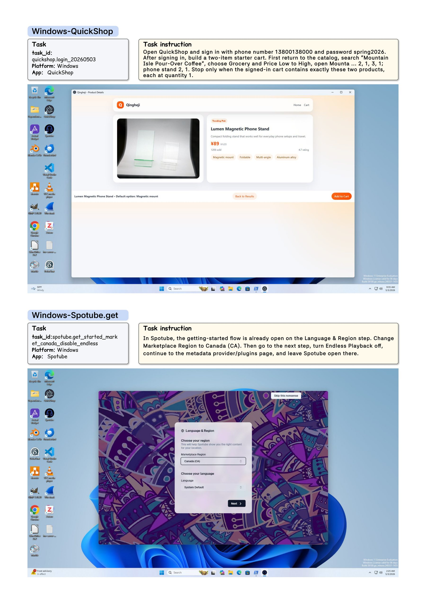
Computer-using agents are increasingly expected to complete realistic user goals rather than isolated GUI actions. However, existing evaluations are fragmented across web, mobile, and desktop settings, making it difficult to measure whether the same agent can sustain long-horizon workflows across heterogeneous software platforms while preserving final-state correctness.
We introduce OS-Omni, a 1,200-task cross-platform benchmark and execution environment for evaluating computer-using agents across Windows, Ubuntu, macOS, iOS, Android, and Web environments. OS-Omni provides reproducible initialization, platform-specific adapters, trajectory logging, and executable final-state evaluators, and includes controlled service-backed applications for workflows involving account, cart, budget, calendar, message, and other persistent state.
Human studies show that OS-Omni tasks require 67.54 interaction steps, substantially exceeding OSWorld references of 15.0 steps. Throughout our experiments, the strongest evaluated agent, GPT-5.5, reaches 47.1% average success, trailing the 88.1% human reference by 41.0 points; on hard workflows, it drops from 77.8% success on easy tasks to 16.4%, while humans remain at 76.3%. These results indicate that current agents remain far from platform-robust, long-horizon computer use, especially when success requires sustained state tracking and durable final-state changes.
The runtime stack combines shared orchestration with platform-specific adapters. Execution specifications select the task, model, observation mode, action mode, and history window. Platform runners restore the environment, run the agent loop, record trajectories, and invoke task-specific final-state evaluators.
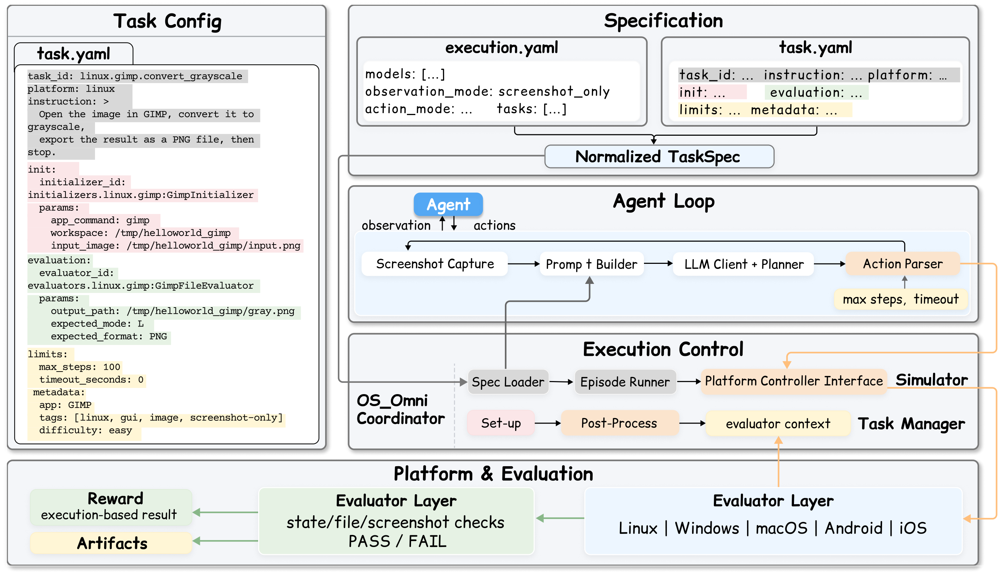
OS-Omni balances 200 tasks per platform group and covers cross-application workflows, productivity tasks, daily-life tasks, browser tasks, and operating-system tasks. Controlled service-backed applications support reproducible workflows involving carts, accounts, budgets, calendars, messages, and durable state.
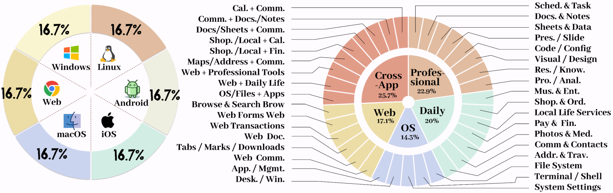
Compared with representative executable GUI-agent benchmarks, OS-Omni provides broader platform coverage, richer application diversity, cross-platform workflows, cross-application workflows, and curated applications with reproducible final-state evaluation.
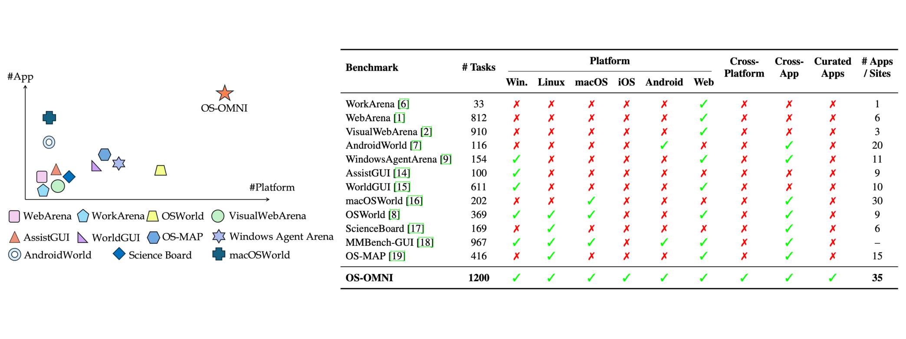
Tasks are created through experience-based design, independent review, cross-platform difficulty calibration, oracle-based execution validation, and failure-state testing. This process keeps the benchmark grounded in realistic use while making final-state checks auditable.
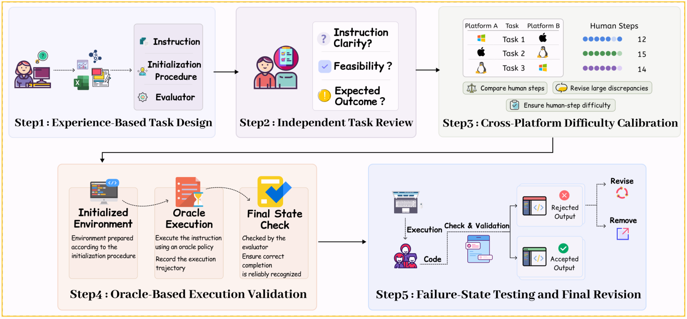
The strongest evaluated agent, GPT-5.5, reaches 47.1% average success on the 300-task testmini subset, trailing the 88.1% human reference by 41.0 points. On hard workflows, it drops from 77.8% success on easy tasks to 16.4%, while humans remain at 76.3%.
OS-Omni testmini benchmark - success rate (%)
| Model / Agent | Group | Windows | Linux | macOS | iOS | Android | Web | Avg. |
|---|---|---|---|---|---|---|---|---|
| Human Performance | Human | 89.2 | 87.3 | 89.9 | 87.6 | 86.3 | 88.5 | 88.1 |
| GPT-5.5 | General | 54.0 | 41.3 | 48.5 | 41.7 | 50.0 | 47.3 | 47.1 |
| GPT-5.4 | General | 19.8 | 46.3 | 33.3 | 56.3 | 16.7 | 35.5 | 34.6 |
| Claude Opus 4.7 | General | 26.4 | 48.8 | 36.0 | 33.4 | 27.1 | 36.1 | 34.6 |
| Gemini 3.1 Pro | General | 20.0 | 21.3 | 20.0 | 32.1 | 25.1 | 22.0 | 23.4 |
| Gemini 3 Pro | General | 16.8 | 21.3 | 16.3 | 22.9 | 14.6 | 21.1 | 18.8 |
| Qwen 3.6 Plus | General | 12.8 | 10.0 | 13.0 | 22.9 | 10.5 | 17.9 | 14.5 |
| Kimi K2.6 | General | 2.7 | 8.8 | 3.2 | 4.4 | 3.4 | 7.1 | 4.9 |
| ScaleCUA-32B | Specialized | 7.9 | 21.3 | 0.0 | 4.2 | 0.0 | 15.1 | 8.1 |
| OpenCUA-72B | Specialized | 7.9 | 20.0 | 18.8 | 4.2 | 0.0 | 9.8 | 10.1 |
Values aggregate easy and hard success rates by platform. The full paper table reports separate easy and hard cells for each platform.
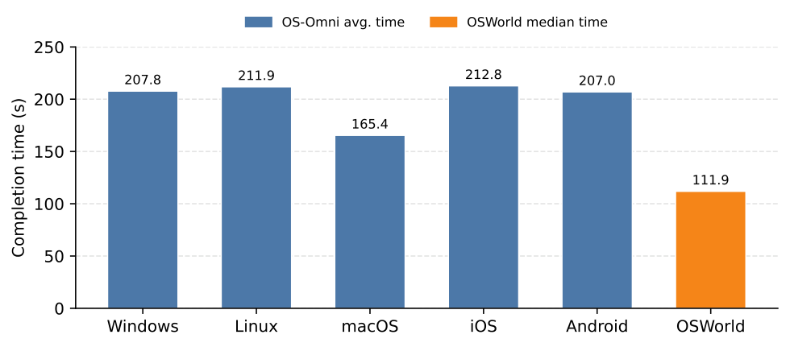
Human completion time by platform.
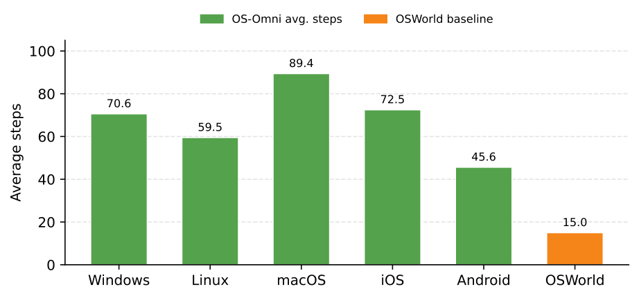
Human interaction steps by platform.
These case studies show representative screenshot-only tasks across desktop and mobile platforms. The platform buttons in the header jump directly to the corresponding case.

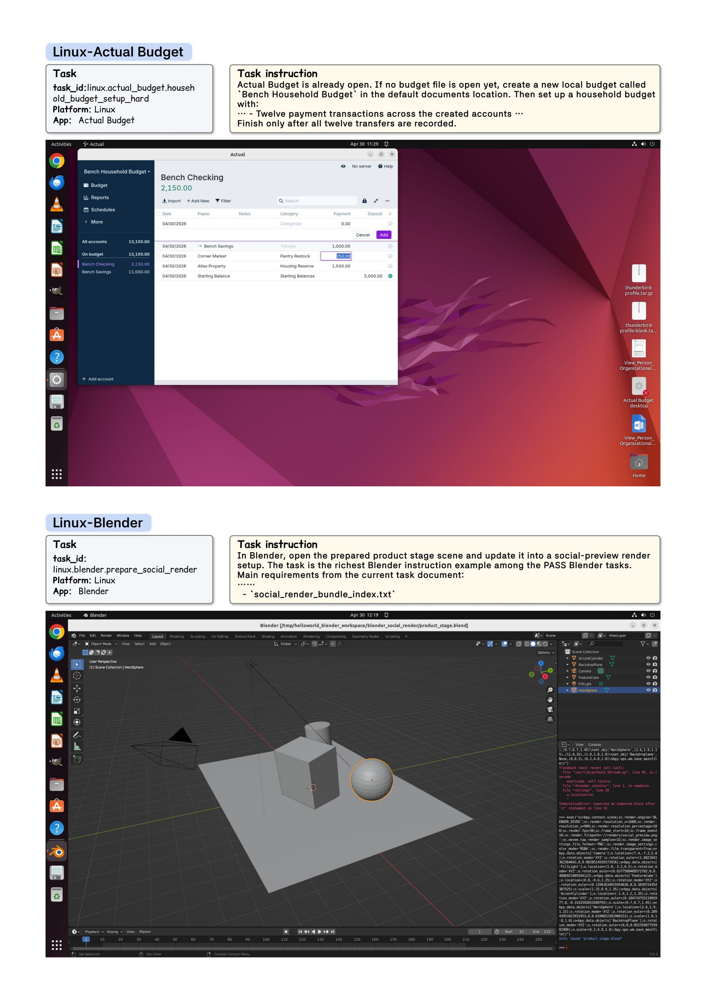
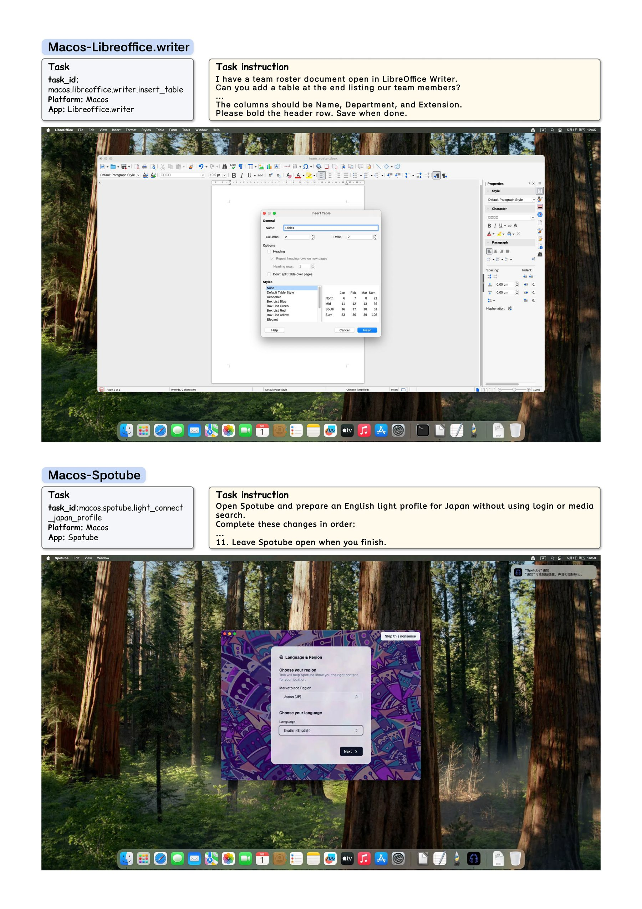
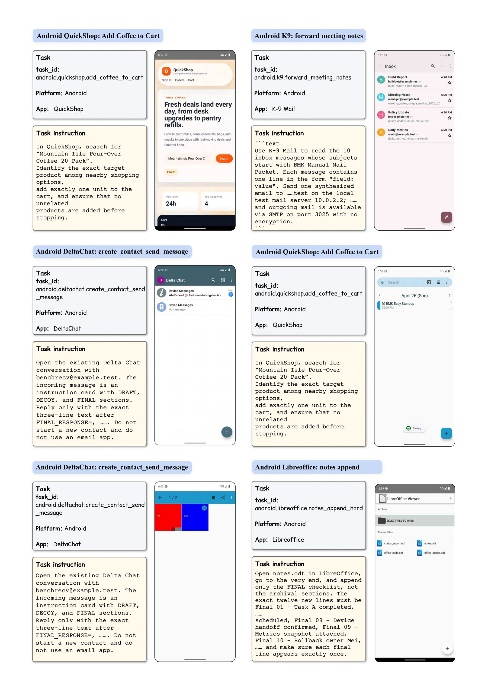
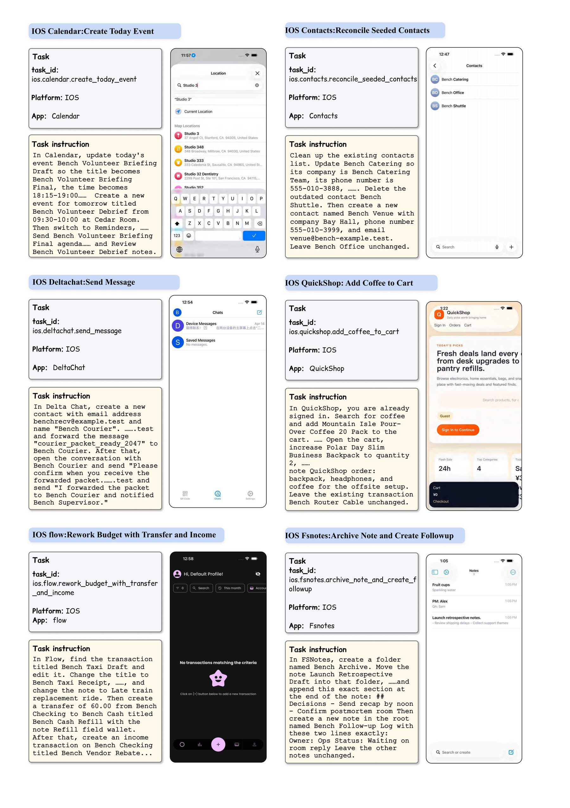
Common failures include visual grounding errors, state-tracking errors, persistence errors, platform timing issues, and transfer mistakes in cross-platform workflows.
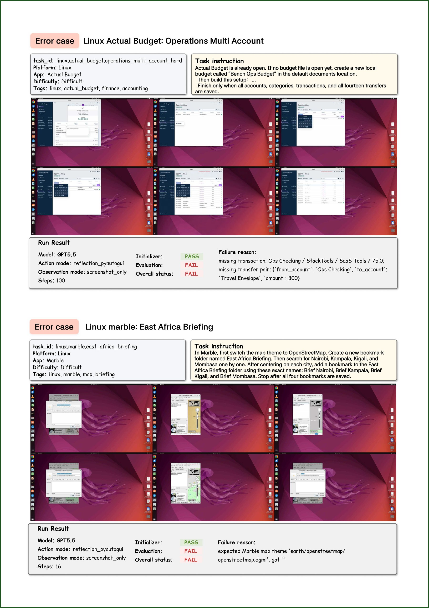
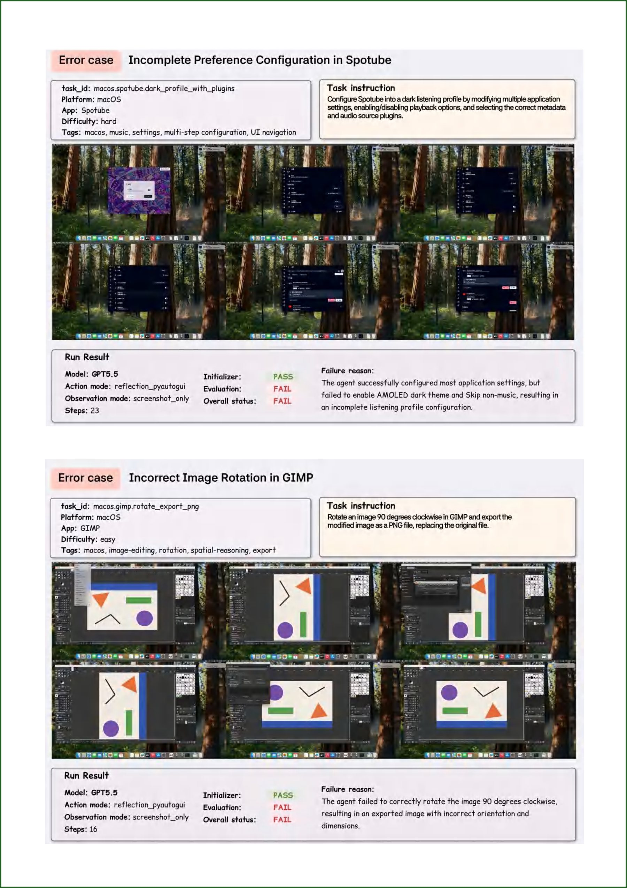
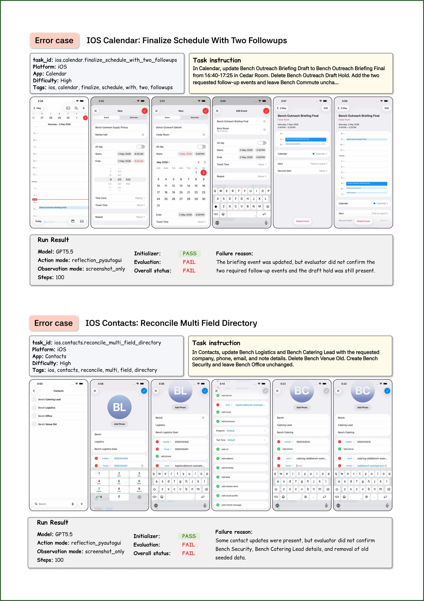
@misc{anonymous2026osomni,
title = {OS-Omni: Benchmarking Generalist Computer-Using Agents on Long-Horizon Workflows Across Platforms},
author = {Anonymous Authors},
year = {2026},
note = {NeurIPS 2026 submission}
}